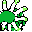

#228
Cradily
RockGrass
It sways its body like kelp as it holds prey fast Then it ends fights with strong acid
Base stats Total 440
HP96
Attack91
Defense107
Speed43
Special103
Details
- Species
- Barnacle
- Height
- 4'11"
- Weight
- 133.8 lb
- Catch rate
- 45
- Base exp
- 201
- Growth
- Medium Fast
Level-up moves
LevelMoveType
StartConstrictNormal
StartAcidPoison
StartMega DrainGrass
Lv 9ConstrictNormal
Lv 17Rock ThrowRock
Lv 22Confuse RayGhost
Lv 28Mega DrainGrass
Lv 30Rock SlideRock
Lv 36AcidPoison
Lv 42BarrierPsychic
Lv 48SolarbeamGrass
Lv 54Stone EdgeRock
Evolution
Evolves from Lileep
Where to find
Not found in the wild — evolve, trade or catch it elsewhere.
TM / HM
TM03 Swords DanceTM06 ToxicTM08 Body SlamTM09 Take DownTM10 Double-EdgeTM11 BubblebeamTM12 Water GunTM15 Hyper BeamTM21 Mega DrainTM22 SolarbeamTM26 EarthquakeTM28 DigTM31 MimicTM32 Double TeamTM34 BideTM40 Sludge BombTM44 RestTM48 Rock SlideTM50 SubstituteHM04 StrengthHM05 Flash